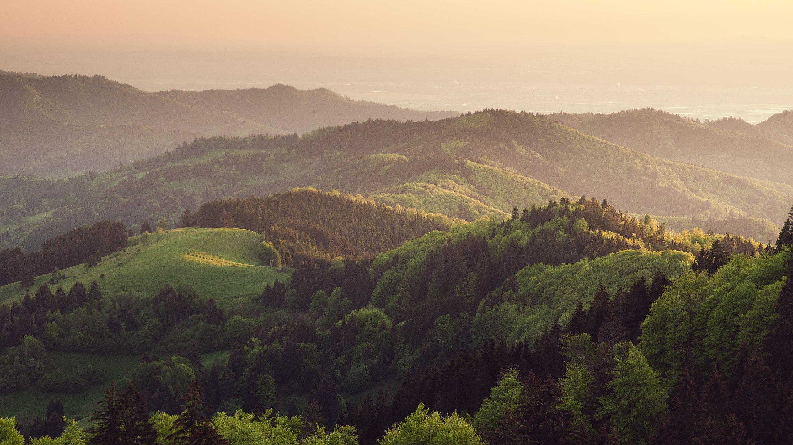

| Exports | Picture | Description | |
|---|---|---|---|
| Water | Water. A key ingredient to the survival of humanity. One of the main exports is water, filtered and sent through the planetary system. | ||
| Wood |  | This resource is used for building houses, tools, furniture, and paper, just to name a few things. | Oil | Using rather new technology, Camlanteu's top engineers and scientists have found oil in the deeper layers of Earth, and have created oil wells | Cement | | Cement is the literal foundation of a building. Needless to say, it is useful when creating buildings and structures. | Imports | Picture | Description |
| Iron | Iron is a strong metal, capable of withstanding much pressure. This makes it a valuable resource for building things like houses, or tools. | ||
| Carbonic Acid | | Imported from Dystopia, carbonic acid is used in a wide variety. From medical use, to making carbonated drinks, this compound has multiple uses. |